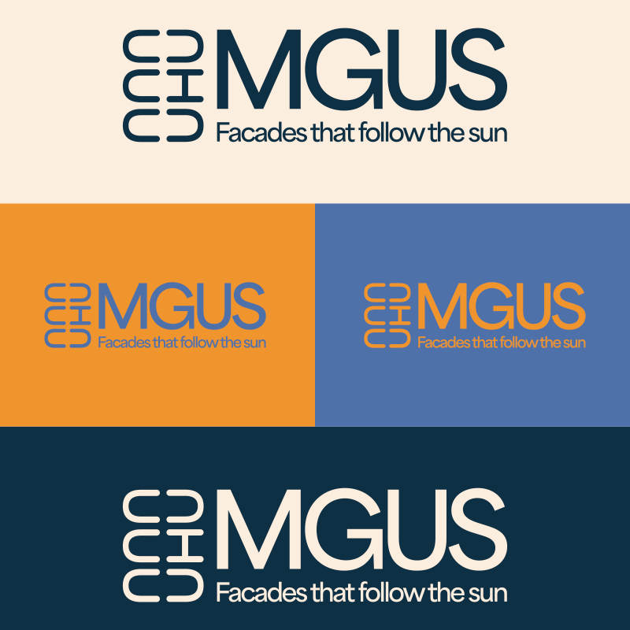
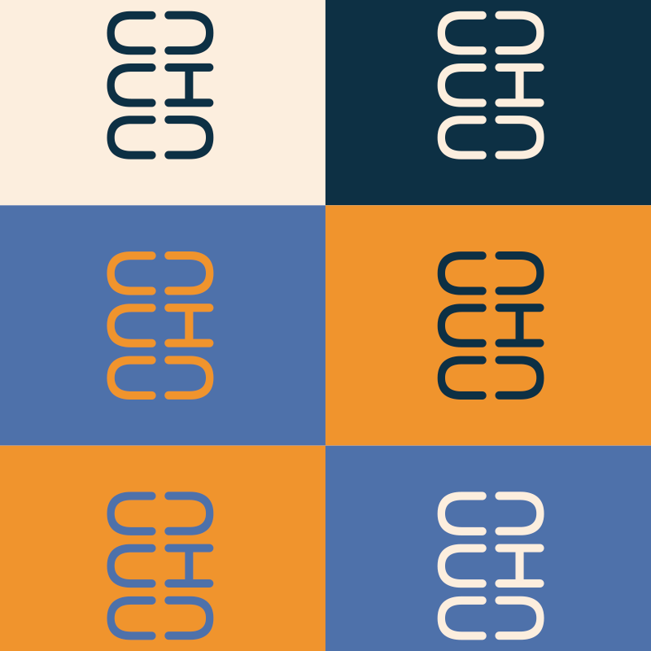
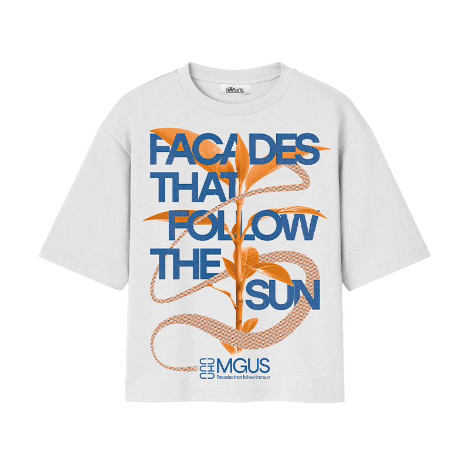
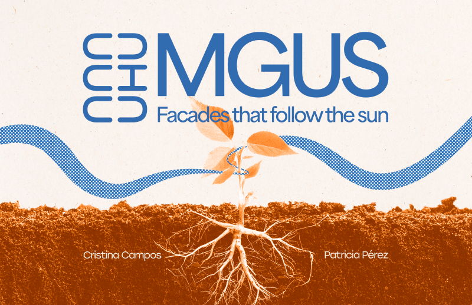
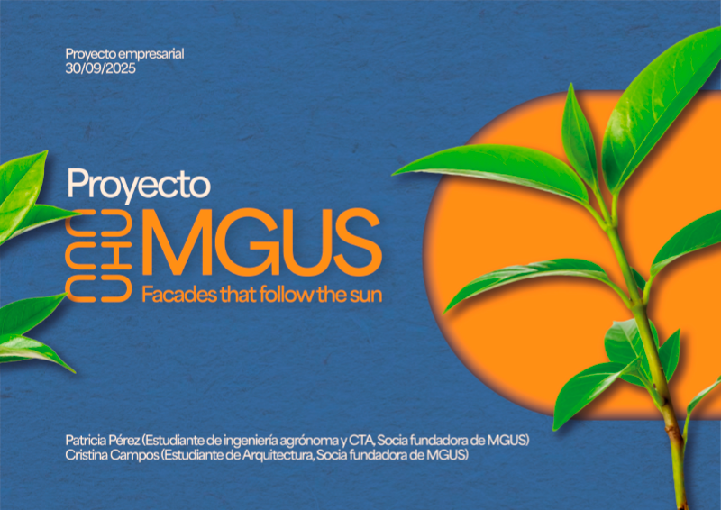

MGUS
(Modular Gardening for Unblown Spaces)

MGUS (Modular Gardening for Unblown Spaces)-> MGUS comes to life at the crossroads of agronomy and architecture. Cristina and Patri (both current students and researchers at the UPV) needed a visual identity to take their already awarded project to a higher graphic quality level.
My role was developing the new image (logo, adaptations...), documents such as submission documents for awards or elevator speeches and merchandising (T-Shirts, presentation cards...).




